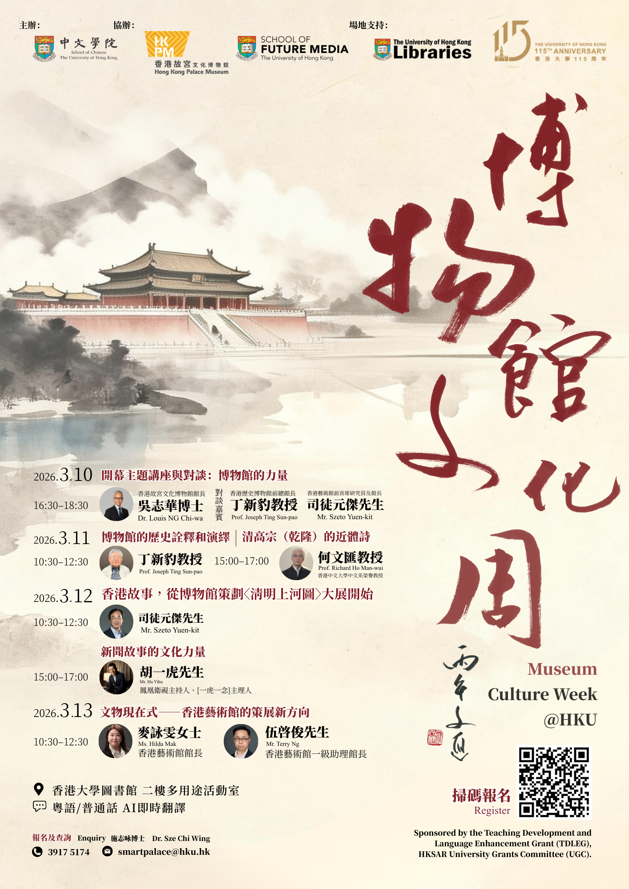
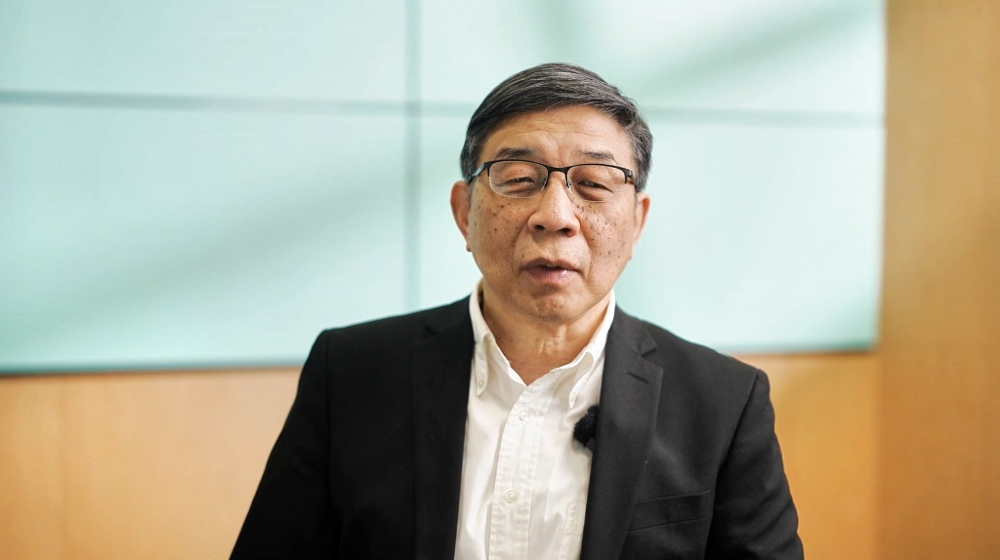
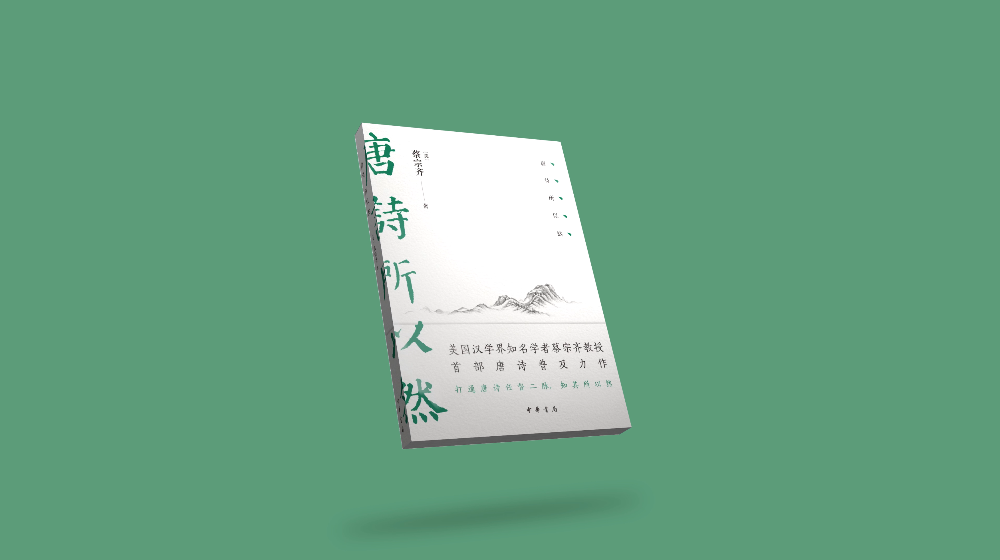
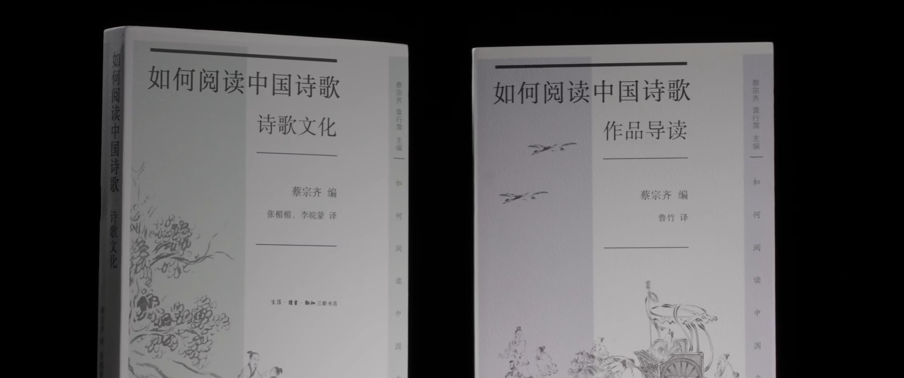
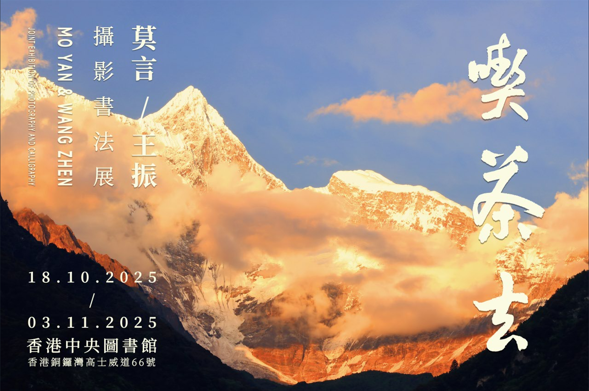
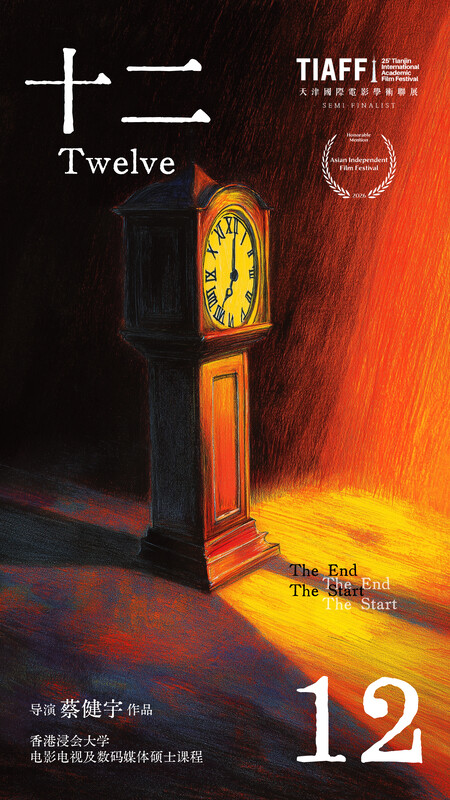
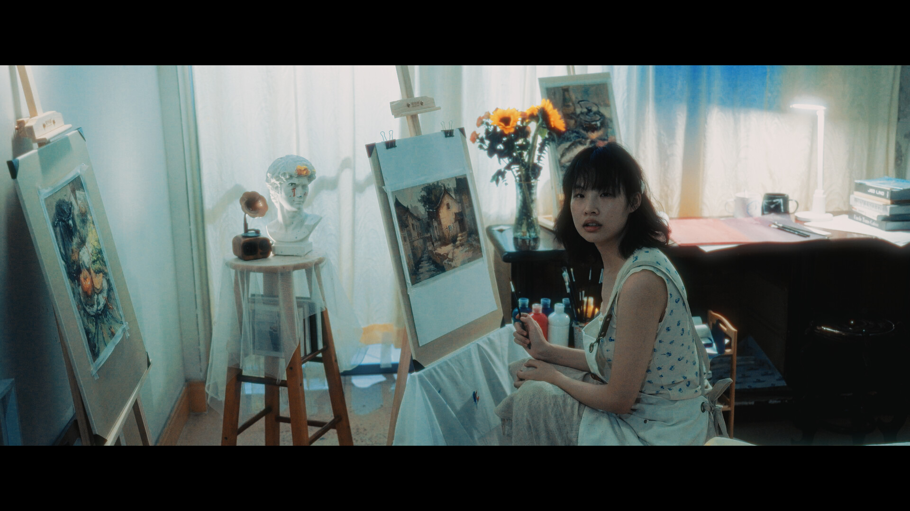
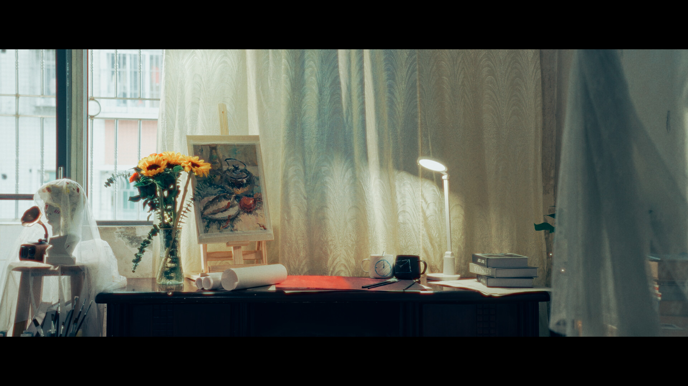
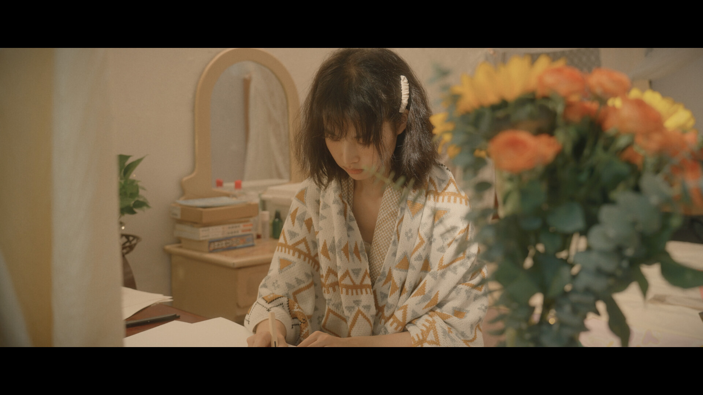
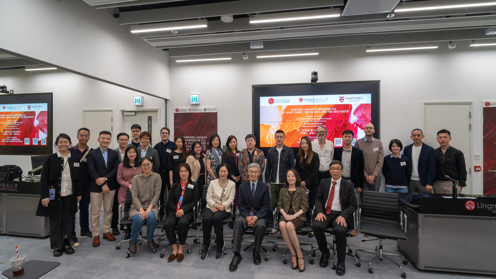

Ongoing Projects 進行中項目
.jpg)

香港大學中文學院
博物館文化周
時間：2025年9月至今
項目：「智慧博物館」及「博物館文化周」
職責：主視覺設計、活動網站設計與搭建
如何閲讀中國詩歌
How to Read Chinese Poetry
時間：2022年9月至今
機構：嶺南大學環球中國文化高等研究院
職責：拍攝、剪輯、設計、質量審查、宣傳
成就：全平臺逾 3,000,000 次播放

.jpg)
Brand Identity
& Promotion
時間：長期項目 / Ongoing
為學術出版物及機構設計並製作高品質的視覺宣傳內容，涵蓋 3D 建模渲染、動態視覺及實拍攝影，全方位塑造專業且極具電影感的品牌形象。
- 《嶺南學報》品牌視覺宣傳
- 《唐詩所以然》3D 宣傳製作
- 《如何閲讀中國詩歌》書籍實拍宣傳



Completed Projects 已完成項目
Global Forum on Digital
Organizational Identity
時間：2025年9月至11月
職位：Technical Director 技術總監
地點：Cyberport 數碼港
為國際會議設計並執行端到端（End-to-End）的技術解決方案，包括場內外/遠程通訊架構、直播方案設計、現場音頻設計。同時負責大會宣傳海報設計，並統籌現場錄影與廣播工作。
.jpg)


放寬心·吃茶去
時間：2025年8月至10月
職位：視覺及活動統籌 (Visual & Event Coordinator)
成就：200k+ 線上瀏覽量，300+ 現場與會者
諾貝爾文學獎獲得者莫言香港展覽。除主導大會主視覺（KV）、宣傳策略與活動策劃外，亦全面負責現場攝錄影方案、現場直播架構設計及整體行政統籌，確保了高規格文化活動的順利落地。



12 Twelve
時間：2024年3月至5月
職責：導演、編劇、攝影、剪輯、聲音設計
- Honorable Mention, Asian Independent Film Festival
- Official Selection (Semi-Finalist), 25th Tianjin International Academic Film Festival
狀態：影展投遞中 (Festival Circuit)
* 因影片仍在投遞各大影展，目前暫不提供在線預覽鏈接。







Lingnan Univ. x Harvard Univ.
Joint Academic Seminar
時間：2023年12月
職位：Technical & Visual Lead
成就：600+ 線上觀眾，100+ 現場與會者
為「The Avant-Garde x Hong Kong and the New South」聯合學術研討會搭建全面的現場錄製與直播解決方案。主導核心視覺設計並管理 VIP 嘉賓接待流程。
VOGUE Featured
收錄之攝影作品